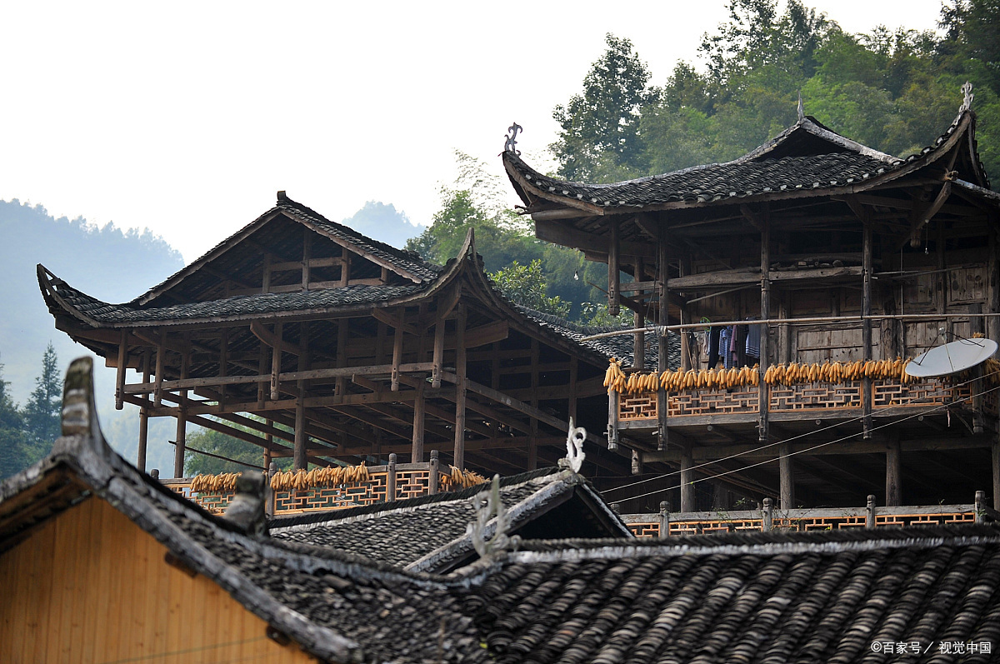
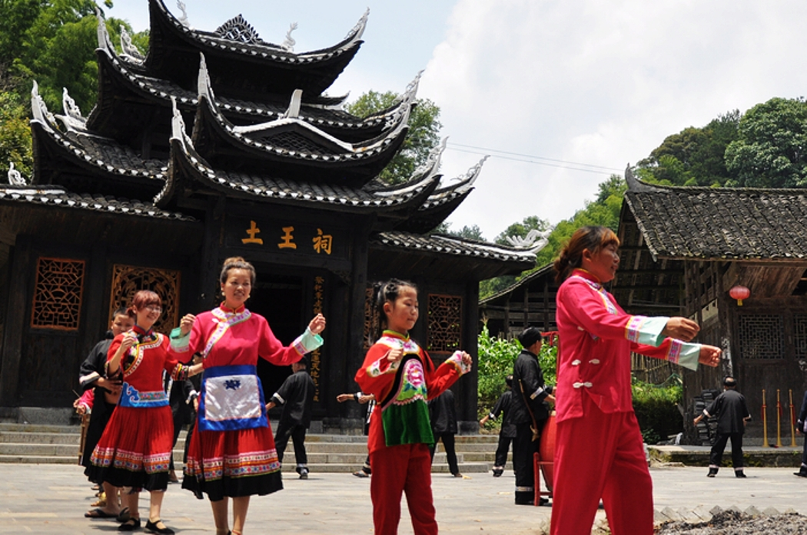
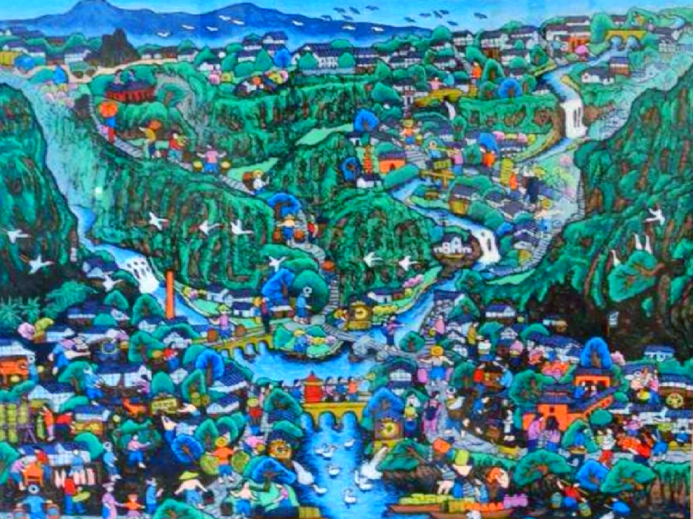

重庆山多平地少，先民借鉴干栏式建筑，发明了'不挖山、不填方'的吊脚楼：用木柱把房子撑在陡坡上，一柱落地、三面悬空。
穿斗式木构架不用一颗铁钉，靠榫卯咬合，抗震又透气，是山城最聪明的建筑解法。
洪崖洞、龚滩、濯水保存至今的吊脚楼群，都是这套营造体系的活标本。
铜梁龙舞起于明代，兴于清代，龙具'大蠕龙'长几十米，被誉为'中华第一龙'。…

摆手舞是土家族祭祀性舞蹈，'舍巴日'（摆手节）上，人们围着摆手堂的旗杆跳通宵…

1980 年代，綦江的农民拿起刻刀，把秧歌、婚嫁、赶场刻进木板再拓成画。…